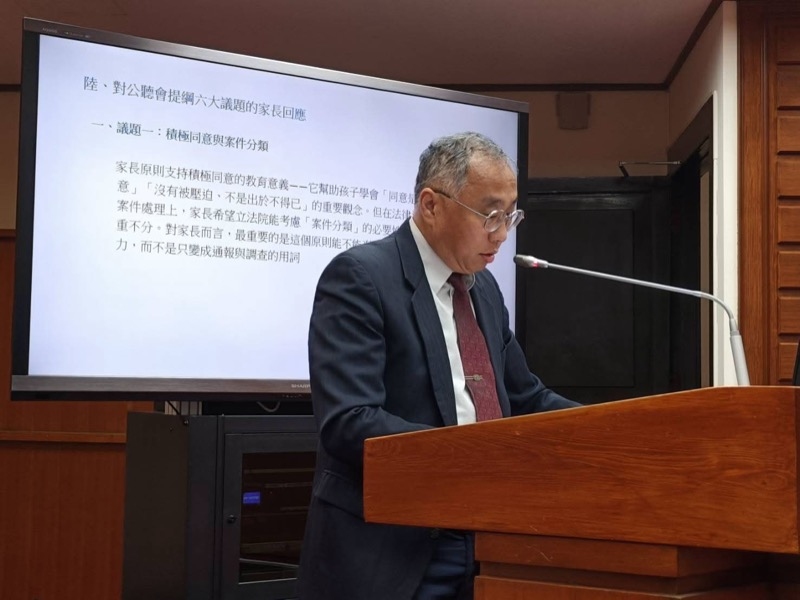

家長支持性平卻不滿意現行制度？全長聯指出三大教育缺口
30 秒看懂重點是什麼？
- 核心觀點：家長支持性別平等，但關心的是制度「結果」——這些年性平法一修再修、條文越來越多，孩子有沒有變得更懂界線、更能保護自己？從官方統計與家長觀察來看，答案並不樂觀。
- 關鍵數據：青少年 HIV 與梅毒比率未明顯下降、親密關係暴力受害年齡年輕化、數位性影像事件頻發（疾管署 2024；衛福部保護司 2024；警政署 2024）。
- 行動呼籲：全長聯提三項建議——(1) 建立清楚、分齡、以孩子保護為核心的性健康教育；(2) 把情感教育正式補起來；(3) 建立家校合作機制，讓家長不是最後才知道。

為什麼家長說孩子沒有變得更健康更懂尊重？
家長團體長年被貼上「反對性平」的標籤，其實並不公平。對絕大多數家長而言，真正的核心問題從來不是「要不要性別平等」，而是「我的孩子有沒有因為現在的制度變得更健康、更成熟、更懂得保護自己」。全長聯在 0415 公聽會書面報告中明確表達：家長支持性別平等，也支持校園裡每一個孩子——不論其性別、家庭背景、性別氣質或性傾向——都能被尊重、被陪伴、被公平對待。
性別平等教育法自 2004 年立法以來歷經多次修正，2023 年大幅修法後部分條文於 2024 年 3 月 8 日上路，程序與規範大幅增加。但從現有官方統計與民間研究來看，結果並不樂觀。疾病管制署 2024、2025 年報告顯示，青少年族群中 HIV 新感染人數雖整體趨於穩定，但在特定族群仍有波動；梅毒與其他性傳染病在青少年中呈現上升趨勢[1][3]。衛生福利部保護服務司 2024 年統計顯示親密關係暴力有年齡年輕化趨勢[2]。監察院 2023 年調查報告亦指出校園性平事件處理機制存在承辦能量不足等結構性問題[14]。
家長在日常生活中也感受得到：孩子對保險套的正確使用、HPV 疫苗的意義、性行為後的自我照顧、緊急避孕的管道等，經常是「聽過但不確定」的狀態。這些本應是性健康教育的基本盤，卻因國中健康教育高比例非專長授課、上課時數不足而難以落實。台灣性教育學會亦表示，健康教育科由於非考科，加上少子化，許多學校不聘健康教育教師，導致健康教育教師專長授課比例極低；當學校將課程配給非專業教師時，教師也因各種情形而未實際授課，學生因此欠缺完整的性別平等與性健康教育[16]。OECD 2023 年指出，性健康教育若只是知識傳遞而未搭配情境演練與生活應用，對行為改變的效果極為有限[4]。
孩子的發展為什麼會出現「過度壓抑」與「過早越界」兩極化？
一套成功的制度，應該讓孩子比過去更懂界線、更懂尊重、更懂保護自己，也更懂尊重別人。但今天家長看到的現場，卻常常是兩個極端：
極端二 過早越界：孩子在家庭與學校還沒好好談之前，就已經被手機、社群、短影片、匿名論壇「先教」了，而且是用商品化、煽動化、碎片化的方式教（勵馨基金會，2022）。一部分孩子在還不具備心理成熟度的情況下，就已被捲入親密關係、分手暴力、情感勒索或網路性勒索事件。
這兩極化現象指向的，並不是「性平法不夠嚴」，而是「性健康教育與情感教育不夠完整、分齡、可操作」。孩子之所以不敢問，是因為沒有人告訴他們可以怎麼問；孩子之所以越界，是因為沒有人教過他們為什麼不能越界、越界以後會有什麼後果、遇到問題要找誰[5][6]。台灣性教育學會亦表示，性平教育不應只談法律條文與權力關係，應回歸「情感關係教育」，教導學生認識關係、如何建立好的關係、面對與處理衝突或結束，以及尊重身體自主權與培養知情同意的態度；此外，性平案件行為人依法須接受的八小時性別平等教育，目前往往只是「湊時數」，未依行為人的行為樣態與需求規劃合適課程，失去即時教育導正行為的寶貴機會[16]。
更嚴重的新議題是數位性風險：未經同意之性私密影像散布、AI 變臉與 Deepfake、網路誘騙與跨境兒少性剝削（內政部警政署，2024）[7]。這些風險的特徵是「孩子接觸速度快於教育速度」，家長與學校還沒來得及好好說明，孩子可能已經在匿名論壇接觸過相關內容，甚至成為受害者而不自知。現行性平法架構並未針對數位風險設計專屬教育模組。
家長為什麼覺得自己被排除在教育之外？
在全長聯多次與各地家長會交流的過程中，最常聽到的一句話是：「我們不是反對教，而是根本不知道在教什麼。」這句話反映的不是家長的排斥，而是現行制度在家長溝通上的斷裂。
許多家長要一直等到孩子回家提問、或是媒體出現爭議時，才第一次知道學校的課程內容。當家長提出課程問題時，有時會被一律視為「反對性別平等」或「保守勢力」，這是制度設計上的盲點。家長雖然不一定是性別研究或性教育的專家，但他們掌握關於孩子發展狀態、家庭背景、情緒反應與日常生活的第一手資訊，是任何專業都無法取代的資源[8]。
當前制度對家長的參與，多半僅限於家長代表會議或事後反映，而缺乏事前的教材說明、課程目標共享、家長諮詢管道、親職教育支援等結構性設計。這正是本文下一節要對照的國際做法。
英國、芬蘭、澳洲怎麼把家長納入性健康教育？
英國 RSHE：家長參與是法定程序。英國教育部 2020 年將 Relationships, Sex and Health Education 納入法定課綱，要求學校必須在課程啟動前與家長進行事前說明、提供教材預覽、並建立反映管道。學校雖有教學自主權，但必須符合國家課綱要求，並受家長檢視[8]。對家長的啟示是：家長參與不是干涉教學，而是家校合作的制度化保障，降低事後爭議空間。
芬蘭：分齡、漸進、家校合作。芬蘭國家教育署將性健康教育與情感能力教育納入基礎教育課綱，採分齡、漸進、以健康素養為主軸。家長透過年度家校會議、課程說明會、親職教育課程等形式參與[9]。性健康教育有其專業軌道，但推行過程必須是家校合作，而非學校單方面推動。
澳洲 HPE：課程內容透明。澳洲將關係與性教育整合於 Health and Physical Education 學科中。家長可透過州教育部門的課程入口網頁檢視內容概要，並在必要時與學校對話[10]。課程透明並不會降低專業，反而讓專業獲得更多支持。
三國共同指向三個結論：第一，性健康與情感教育必須以獨立、系統、分齡的方式存在；第二，家長不是被動被告知的對象，而是被納入制度設計的一環；第三，家校合作的程度越高，事後爭議與衝突反而越少。這支持全長聯所提的三項建議。
全長聯提出哪三項具體建議讓教育真正補起來？
基於前述三大缺口觀察與國際經驗對照，全長聯提出以下三項具體建議：
建議一：分齡性健康教育
將性健康教育獨立為基礎與高中教育的必要課程模組，包含五項核心：身體界線、同意與拒絕、避孕與性病預防（含 HPV 疫苗）、數位性風險（未經同意影像散布、AI 變臉、網路誘騙）、自我保護與求助資源。內容必須具體、分齡、可操作。台灣性教育學會亦表示應落實健康教育師資聘任與專長授課，並加強健康教育、綜合領域與性平教育的跨領域合作。
建議二：情感教育補位
情感教育是校園安全與孩子心理健康的核心，不是附帶問題。應納入正式課程模組，內容包含：戀愛不是禁區、分手不是報復的理由、喜歡不等於可以控制對方、被拒絕後如何面對情緒、情緒調節與求助資源。台灣性教育學會亦表示，行為人的八小時性平教育應透過分析行為樣態與需求進行規劃，與健康教育、綜合領域整合，由具專業背景教師教學，讓行為人真正有行為改變的可能。
建議三：家校合作機制
五項具體機制——(1) 課程啟動前家長說明；(2) 教材透明與諮詢窗口；(3) 申訴與回饋管道；(4) 親職教育資源；(5) 中央與縣市課程審議機制中確保一般家長（非單一立場代表）的參與比例。
我們不期待制度完美，但至少期待孩子在學校學到的，是能讓自己更安全、更健康、更懂得尊重別人，也更懂得保護自己的能力。今天我們不是反對性平，而是希望性平教育真正長出孩子需要的內容，讓它不只是一套處理問題的制度，更是一套幫助孩子好好長大的教育。 ——全國家長會長聯盟（全長聯）理事長 陶蓮生，〈0415 立法院公聽會書面報告〉（2026）
家長最想問的問題 FAQ？
Q1：全長聯是誰？跟全家盟一樣嗎？
全長聯是「全國家長會長聯盟」的正式簡稱，與「全國家長團體聯盟（全家盟）」是不同組織。全長聯以全國各縣市家長會長為主體，長期關注校園安全、教育政策、家校合作等議題，並於 2026-04-15 立法院性平法公聽會提出書面報告。
Q2：家長是不是反對性別平等教育？
全長聯明確支持性別平等，支持孩子不受歧視、不受傷害。家長真正關心的不是「要不要性平」，而是現行制度下孩子有沒有變得更健康、更懂尊重、更懂保護自己。家長反對的是課程不清楚、家長被排除、制度缺口沒補上的現狀。
Q3：為什麼家長說孩子出現兩極化？是什麼意思？
一端是過度壓抑：孩子不敢說話、不敢幫開門、不敢稱讚外表，怕被說是性騷擾；另一端是過早越界：孩子透過手機與匿名論壇吸收片面資訊、太早捲入親密關係或網路性勒索。兩極化背後都是性健康與情感教育沒落地的缺口。
Q4：家長到底希望學校教什麼？
家長希望學校教的不是抽象口號，而是可操作的生活能力：辨識身體界線、學會說同意與不同意、懂得避孕與性病預防、理解數位性風險、知道被拒絕後怎麼處理情緒、遇到問題知道找誰求助。這些能力分齡、漸進、要能真的用在生活中。
Q5：家校合作具體要怎麼做？
全長聯提出五項機制：課程開始前提供家長教學目標說明、教材透明可檢視、建立家長諮詢與回饋管道、提供親職教育資源、在中央與縣市課程審議機制確保一般家長代表比例。英國 RSHE、芬蘭基礎教育課綱都有類似法定家長參與程序。
Q6：情感教育為什麼要獨立？跟性平教育有何不同？
情感教育處理的是關係建立、拒絕與被拒絕、分手暴力預防、情緒調節、網路互動界線——這些是分手暴力與跟蹤騷擾案件的核心根源，需要分齡、漸進、可操作的課程時數與專業師資，不能只塞在性平教育裡一小塊。
Q7：全長聯的三項建議是什麼？
第一，建立清楚、分齡、以孩子保護為核心的性健康教育；第二，把情感教育正式補起來，納入課程與師資培育；第三，建立家校合作機制，包括課程說明、教材透明、諮詢管道、親職教育與家長代表制度。
參考文獻（APA 第 7 版）
- 疾病管制署（2024）。青少年性健康與性傳染病監測報告。衛生福利部。https://www.cdc.gov.tw/
- 衛生福利部保護服務司（2024）。親密關係暴力與家庭暴力統計年報。衛生福利部。https://dep.mohw.gov.tw/dops/
- 疾病管制署（2025）。HIV 與青少年性健康年度報告。衛生福利部。https://www.cdc.gov.tw/
- OECD. (2023). Education at a Glance 2023: Gender equity and comprehensive sexuality education. OECD Publishing. https://www.oecd.org/education/education-at-a-glance/
- 勵馨基金會（2022）。青少年親密關係暴力調查報告。勵馨基金會。https://www.goh.org.tw/
- 國教行動聯盟、台灣性教育學會（2025）。性健康與情感教育獨立課程倡議書。https://www.facebook.com/twedumove/
- 內政部警政署（2024）。跟蹤騷擾案件統計報告。內政部。https://www.npa.gov.tw/
- Department for Education (UK). (2020). Relationships education, relationships and sex education (RSE) and health education: Statutory guidance. UK Government. https://www.gov.uk/government/publications/relationships-education-relationships-and-sex-education-rse-and-health-education
- Finnish National Agency for Education. (2016). National core curriculum for basic education 2014 (English translation). FNAE. https://www.oph.fi/en/statistics-and-publications/publications/national-core-curriculum-basic-education
- Australian Curriculum, Assessment and Reporting Authority. (2021). Australian Curriculum: Health and Physical Education (Version 9.0). ACARA. https://v9.australiancurriculum.edu.au/
- 衛生福利部（2023）。青少年健康行為調查報告。衛生福利部。https://www.mohw.gov.tw/
- 現代婦女基金會（2023）。2023 年台灣親密關係暴力與性騷擾防治倡議報告。現代婦女基金會。https://www.38.org.tw/
- 家庭教育法（2019 修正公布）。全國法規資料庫。https://law.moj.gov.tw/LawClass/LawAll.aspx?pcode=H0080050
- 立法院社會福利及衛生環境委員會（2026）。性別平等教育法修法方向公聽會提綱。立法院。https://lis.ly.gov.tw/
- Mathews, B., & Bross, D. C. (Eds.). (2015). Mandatory reporting laws and the identification of severe child abuse and neglect. Springer.
- 台灣性教育學會（2026）。針對性別平等教育法修法方向之三點訴求。台灣性教育學會。